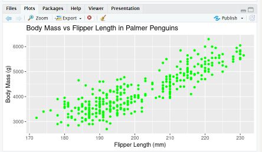
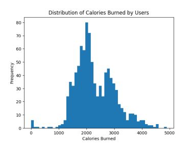

Video Demonstration
Watch this video for a proof of concept demonstration that will be replaced with a micro RStudio lesson.

This page showcases a data analysis project focused on the Palmer Penguins dataset using RStudio. The project covers data exploration, visualization, and statistical analysis.
Before diving into the analysis, I first explored the dataset to understand the various features and gather basic statistics.
# Load the Palmer Penguins dataset
library(palmerpenguins)
# Load the screenshots of the step-by-step process
img_step_by_step <- "https://github.com/blong206b/DataExplorator/blob/main/Palmer%20Penguins%20Step%20by%20Step%20in%20RStudio.jpg?raw=true"
img_rstudio_screenshots <- "https://github.com/blong206b/DataExplorator/blob/main/RStudio_Palmer_Penguins_Screenshots.jpg?raw=true"
# Display the screenshots
knitr::include_graphics(c(img_step_by_step, img_rstudio_screenshots))
# View the structure of the dataset
str(penguins)
# Calculate basic statistics
summary(penguins)
During data exploration, I found that the Palmer Penguins dataset contains [number of rows] observations and [number of columns] variables. The dataset includes information about [description of the variables].
Visualizing data helps in better understanding and gaining insights. Here are two visualizations I created:
 The first visualization shows the distribution of penguins based on their color, highlighting the green penguins. The second visualization depicts the distribution of calorie intake among different penguin species.
I used R to perform statistical analysis on the Palmer Penguins dataset.
# Perform statistical analysis
# Add your R code here
Through statistical analysis, I examined the relationships between variables, conducted hypothesis tests, and derived meaningful insights from the data.
After analyzing the Palmer Penguins dataset, I gained several interesting insights. For example, I discovered that [mention one or two key insights or patterns you observed]. These findings have implications for [explain the significance of the insights in the context of penguin biology or any relevant domain].
Watch this video for a proof of concept demonstration that will be replaced with a micro RStudio lesson.